当我们在shell进程里面执行命令"/sbin/hello.elf &"来启动程序"hello"时，shell进程首先会创建一个子进程，然后子进程转载程序hello.elf，下面来接少侠新建进程饿汉装载程序。
x1ret = fork();2
3if (ret > 0) {4/* 父进程继续执行 */5} else if (ret == 0) {6/* 子进程装载程序 */7 ret = execve(filename, argv, envp);8 } else { 9/* 创建子进程失败 */ 10}内核中，新进程时从一个已经存在的进程复制出来的，内核使用静态数据结构造成0号内核线程，0号内核线程分叉生成1号内核线程和2号内核线程（kthreadadd线程）。
1号内核线程完成初始化后，挂载用户程序，变成1号进程，其他进程都是1号进程或者它的子进程分叉生成的，其他内核线程是kthreadd线程分叉生成的。
3个系统调用可以用来创建新的进程：
1. fork（分叉）：子进程是父进程的一个副本，采用了写时复制的技术。
2. vfork：用于创建子子进程，之后子进程立即调用execve以蝗灾新程序的情况。为了避免复制物理页，父进程会睡眠等待子进程装载新程序。现在fork采用了写时复制的技术，vfork速度比较慢已经弃用。
3. clone（克隆）：可以精确的控制子进程和父进程共享哪些资源，这个系统调用的主要用处是可供pthread库用来创建线程。
clone是功能最齐全的函数，参数多，使用复杂，fork是clone的简化函数。
SYSCALL_DEFINE0(fork);宏展开之后是asmlinkage long sys_fork(void)。
SYSCALL_DEFINE后面的数字表示系统调用的参数个数，SYSCALL_DEFINE0表示系统调用没有参数，SYSCALL_DEFINE6表示系统调用有6个参数，如果参数超过6个，使用宏SYSCALL_DEFINEx。
asmlinkage表示这个C语言函数可以被汇编代码调用，如果使用C++编译器，asmlinkage被定义为extern "C"；如果使用C编译器，asmlimkage是空的宏。
系统调用的函数名称以"sys_"开头。
创建新进程的进程p和生成的新进程的关系有3种关系：
1. 新进程时进程p的字进程；
2. 如果是clone传入标志位CLONE_PARENT，进程p和新进程时兄弟关系，有一个共同的父进程；
3. 如果clone传入的标志位CLONE_THREAD，进程p和新进程属于一个线程组；
创建新进程的3个系统调用在文件"kernel/fork.c"中，他们把工作委托给函数_do_fork。
61long _do_fork( unsigned long clone_flags,2 unsigned long stack_start,3 unsigned long stack_size,4 int __user *parent_tidptr,5 int __user *child_tidptr,6 unsigned long tls);_do_fork参数说明：
clone_flags：克隆标志，最低字节指定了进程退出时发给父进程的信号，创建线程时，该参数最低字节是0，表示线程退出时不需要向父进程发送信号；
stack_start：只在创建线程时有意义，用来指定新线程的用户栈的起始地址；
stack_size：只在创建线程时有意义，用来指定新线程的用户栈的长度，这个参数已经废弃；
parent_tidptr：只在创建线程时有意义，如果参数clone_flags指定了标志位CLONE_PARENT_SETTID，那么调用线程需要把新线程的进程表示写到参数parent_tidptr指定的位置，也就是新线程会保存自己的进程标志符的位置；
child_tidptr：只在创建线程时有意义，存放新线程保存自己的进程标识符的位置。如果参数clone_flags指定了标志位CHILD_CLEARTID，那么线程退出时需要清除自己的进程标识符，如果参数clone_flags指定了标志位CLONE_CHILD_SETTID，那么新线程第一次被调度时需要把自己的进程标识符写到参数child_tiddtr指定的位置；
tls：只在创建线程时有意义，如果参数clone_flags指定了标志位CLONE_SETTLS，那么参数tls指定新线程的线程本地存储地址；
_do_fork执行流程说明：
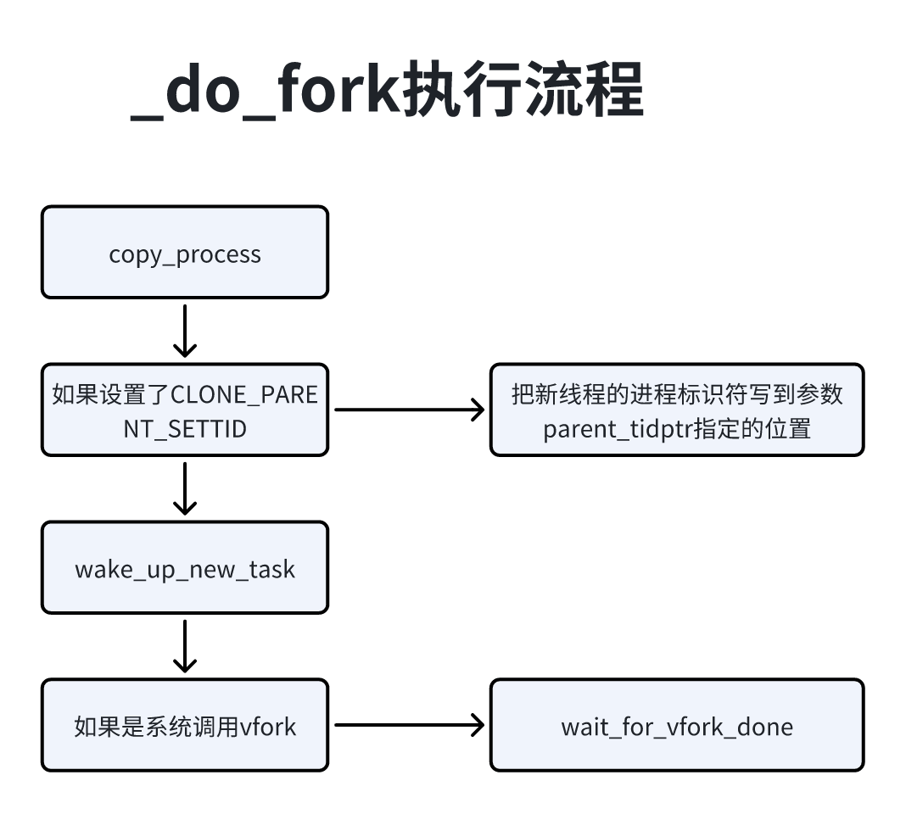
调用以创建新进程；
如果参数设置了CLONE_PARENT_SETTID，就会把新进程表示符写到parent_tidptr指定的位置；
调用函数wake_up_new_task来唤醒新进程；
如果系统调用vfork，那么当前进程等待子进程装载程序；
函数copy_process执行流程：（创建新进程）
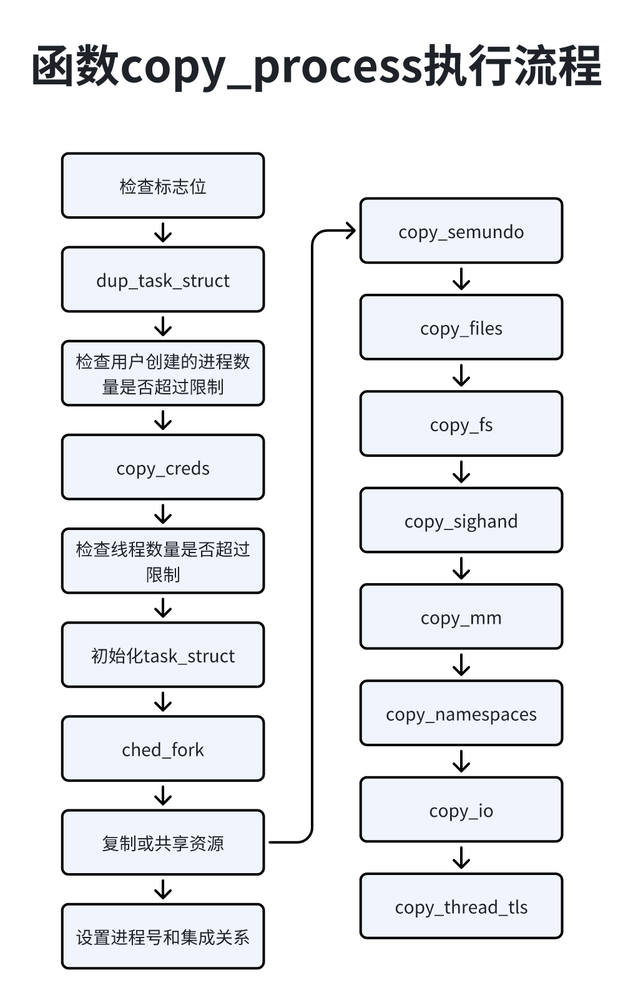
检查标志：以下标志是非法的：
同时设置CLONE_NEWNS和CLONE_FS，即新进程属于新的挂载命名空间，同时当前进程共享文件系统信息；
同时设置CLONE_NEWUSER和CLONE_FS，即新进程属于新的用户命名空间，同时和当前进程共享文件系统信息；
设置CLONE_THREAD，未设置CLONE_SIGHAND，即新进程和当前的进程属于同一个线程组，但是不共享信号处理程序；
设置CLONE_SIGHAND，未设置CLONE_VM，即新进程和当前进程共享信号处理程序，但是不共享虚拟内存；
新进程想要和当前进程称为兄弟进程，并且当前进程时某个进程命名空间中的1号进程，这种标志组合是非法的，说明1号进程不存在兄弟进程；
新进程和当前进程属于同一个线程组，同时新进程属于不同的用户命名空间或者进程号命名空间。这种组合是非法的，说明同一个线程组的所有线程必须属于相同的用户命名空间和进程命名空间；
调用函数dup_task_struct：函数dup_task_struct为新进程的进程描述符分配内存，把当前进程描述符复制一份，为新进程分配内核栈；
如图所示，进程描述符的成员stack指向内核栈。
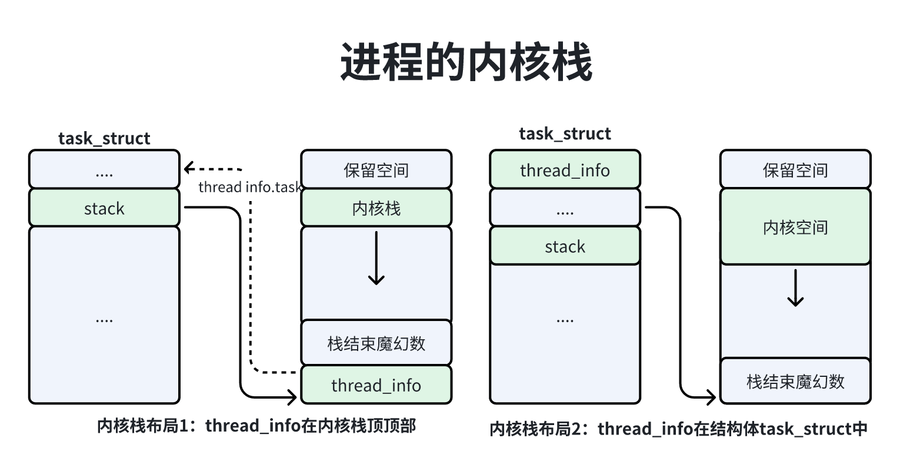
内核栈定义如下：
81// 位置：include/linux/sched.h2
3union thread_union {4 5 struct thread_info thread_info;6 7 unsigned long stack[THREAD_SIZE/sizeof(long)];8}内核栈有2种布局：
1、结构体thread_info占用内核栈的空间，在内核栈的顶部，成员task指向进程描述符；
2、结构体thread_info没有占用内核栈的空间，是进程描述符的第一个成员；
这2种布局的区别是结构体thread_info的位置不同，如果选择第2种布局需要打开配置宏CONFIG_THREAD_INFO_IN_TASK，ARM64架构使用的是第2种布局，优点是thread_info结构体作为进程描述符的第一个成员，它的地址和进程描述符地址相同。当进程在内核模式运行时，ARM64架构的内核使用用户栈指针寄存器SP_El0存放当前进程的thread_info结构体的指针，通过这个寄存器既可以得到thread_info结构体地址，也可以得到进程描述符的地址。
内核栈的长度是THREAD_SIZE，它由各种处理器架构自定义，ARM64架构定义的内核长度是16KB。
结构体thread_info存放汇编代码是直接访问底层数据，由各种处理器架构定义，ARM64架构定义的结构体：
141// 位置 arch/arm64/asm/thread_info.h2
3struct thread_info{4 // 底层标志位5 unsigned long flags;6 // 地址限制7 mm_segment_t addr_limit;8 9 // 保存的寄存器 TTBR0_EL110 u64 ttbr0;11 12 // 0表示可抢占，小于0是缺陷13 int preempt_count; 14};参数说明：
-> flags：底层标志，常用的标志是TIF_SIGPENDING和TIF_NEED_RESCHED，前者表示进程有需要处理的信号，后者表示调度者需要重新调度进程；
-> addr_limit：进程可以访问的地址空间上限，对于进程，它的值是用户地址空间的上限，对于内核简称，它的值是内核地址空间的上限；
-> preempt_count：抢占计数器；
检查用户的进程数量限制：如果当前进程的用户创建的进程数量达到或者超过限制，并且用户不是根用户，也没有忽略资源限制权限（CAP_SYS_RESOURCE）和系统管理权限（CAP_SYS_ADMIN），那么不允许创建新进程。
71if(atomic_read(&p->real_cred->user->processes) >= task_rlimit(p, PLIMIT_NPROC))2{3 if(p->real_cred->user != INIT_USER 4 && !capable(CAP_SYS_RESOURCE) 5 && !capable(CAP_SYS_ADMIN))6 goto bad_fork_free;7}
调用函数copy_credis：主要负责复制或共享证书，证书中有进程的用户标识符、组标识符和访问权限；
如果设置了标志CLONE_THREAD，即新进程和当前进程属于同一个线程组，那么新进程和当前进程共享证书，如图所示；否则，子进程复制当前进程的证书，如果设置了标志CLONE_NEWUSER，那么需要新进程创建新的用户命名空间，新的用户命名空间是当前进程的用户命名空间的子命名空间。
最后把用户的进程数量统计加1。
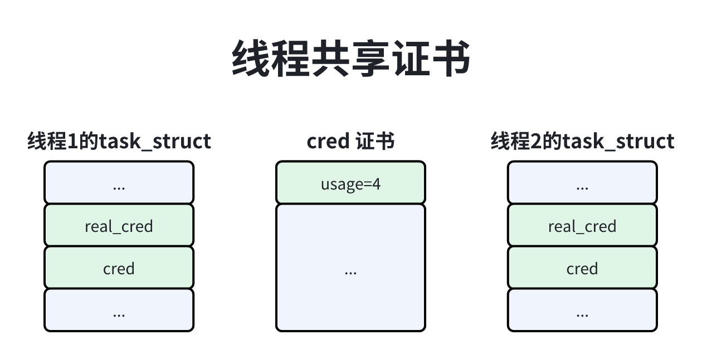
检查线程数量的限制：如果线程数量达到允许的线程最大数量，那么不允许创建新进程。
全局变量nr_threads存放当前的线程数量；max_threads存放允许创建的线程最大数量，默认值是MAX_THREADS。
21if(nr_threads > max_threads)2 goto bad_fork_cleanup_count;
调用函数sched_fork：为新进程设置函数调度器相关的参数，代码如下：
1091// 位置： kernel/sched/core.c2
3/*4 * fork()/clone()-time setup:5 */6int sched_fork(unsigned long clone_flags, struct task_struct *p)7{8 unsigned long flags;9 int cpu = get_cpu();10 // 调用函数__sched_fork 以执行基本设置11 __sched_fork(clone_flags, p);12 13 // 把新进程的状态设置为TASK_NEW14 p->state = TASK_NEW;15
16 // 把新进程的调度优先级设置为当前进程的正常优先级，17 // 为什么不设置为当前进程的调度优先级呢？18 // 因为当前进程可能因为占用实时互斥锁而被临时提升优先级19 p->prio = current->normal_prio;20
21 /*22 * 这个if判断如果当前进程使用了sched_setscheduler设置调度策略和相关参数时23 * 设置了标志SCHED_RESET_ON_FORK，要求创建新进程时把新进程得到调度策略和优先级设置为默认值24 */25 if (unlikely(p->sched_reset_on_fork)) {26 27 // 如果当进程时限期进程或实时进程，那么把新进程的调度策略恢复成SCHED_NORMAL28 // 把nice设置为默认值0， 对应静态优先级为12029 if (task_has_dl_policy(p) || task_has_rt_policy(p)) {30 p->policy = SCHED_NORMAL;31 p->static_prio = NICE_TO_PRIO(0);32 p->rt_priority = 0;33 } 34 35 // 如果当前进程时普通进程，并且nice值小于0，那么把新进程的nice值恢复成默认值0，36 // 对应静态优先级为12037 else if (PRIO_TO_NICE(p->static_prio) < 0)38 p->static_prio = NICE_TO_PRIO(0);39
40 p->prio = p->normal_prio = __normal_prio(p);41 set_load_weight(p);42
43 /*44 * We don't need the reset flag anymore after the fork. It has45 * fulfilled its duty:46 */47 p->sched_reset_on_fork = 0;48 }49
50 /**51 * 根据新进程的调度优先级设置调度类52 */53 54 // 如果调度优先级是期限调度类的优先级，那么返回 -EAGAIN55 if (dl_prio(p->prio)) {56 put_cpu();57 return -EAGAIN;58 59 // 如果调度类优先级是实时调度类，那么把调度类设置为实时调度类60 } else if (rt_prio(p->prio)) {61 p->sched_class = &rt_sched_class;62 } else {63 // 如果调度类优先级是公平调度类，那么把调度类设置为公平调度类64 p->sched_class = &fair_sched_class;65 }66 67 init_entity_runnable_average(&p->se);68
69 /*70 * The child is not yet in the pid-hash so no cgroup attach races,71 * and the cgroup is pinned to this child due to cgroup_fork()72 * is ran before sched_fork().73 *74 * Silence PROVE_RCU.75 */76 raw_spin_lock_irqsave(&p->pi_lock, flags);77 /*78 * We're setting the CPU for the first time, we don't migrate,79 * so use __set_task_cpu().80 */81 // __set_task_cpu函数主要是设置进程在哪个cpu上，如果开启公平组调度和实时组调度，82 // 那么还需要设置新进程属于哪个公平运行队列和哪个实时运行队列83 __set_task_cpu(p, cpu);84 85 // 执行调度类的task_fork方法86 if (p->sched_class->task_fork)87 p->sched_class->task_fork(p);88 raw_spin_unlock_irqrestore(&p->pi_lock, flags);89
90 if (likely(sched_info_on()))92 memset(&p->sched_info, 0, sizeof(p->sched_info));93 p->on_cpu = 0;96 98 // 初始化新进程的抢占计数器，在抢占式内核中设置为2，在非抢占式内核中设置为0。99 // 因为抢占式内核中，如果函数schedule()在调度进程时选中了新进程，那么调用函数100 // rq_unlock_irq()和sched_preempt_enable_no_resched()时会把新进程的抢占计数减2次101 init_task_preempt_count(p);102 plist_node_init(&p->pushable_tasks, MAX_PRIO);104 RB_CLEAR_NODE(&p->pushable_dl_tasks);105
107 put_cpu();108 return 0;109}
复制和共享资源：
UNIX系统5信号量：只有属于同一个线程组的新城之间才会共享UNIX系统5信号量，函数copy_semundo处理处理UNIX系统5信号量的共享问题，代码：
271// 位置：kernel/fork.c2
3int copy_semundo(unsigned long clone_flags, struct task_struct *tsk)4{5 struct sem_undo_list *undo_list;6 int error;7 8 /**9 * 如果调用者传入标志CLONE_SYSVSEM，表示共享UNIX系统5信号量，那么新进程和当前进程10 * 共享UNIX系统5信号量的撤销请求链表，对应结构体sem_undo_list，把计数加1。11 * 当进程退出时，内核需要把信号量的技术值加上该进程曾经减去的数值。12 */13 if(clone_flags & CLONE_SYSVSEM){14 error = get_undo_list(&undo_list);15 if(error)16 return error;17 18 atomic_inc(&undo_list->refcnt);19 tsk->sysvsem.undo_list = undo_list;20 21 } else22 23 // 没有标志的话，UNIX系统5信号量的撤销请求链表为NULL24 tsk->sysvem.undo_list = NULL;25 26 return 0;27}打开文件表：只有属于同一个线程组之间才会共享打开的文件表，函数copy_files复制或者共享打开文件表代码如下：
321// 位置：kernel/fork.c2
3static int copu_files(unsigned long clone_flags, struct task_struct *tsk)4{5 struct files_struct *oldf, *newf;6 int error = 0;7 8 oldf = current->files;9 if(!oldf) /*后台进程可能没有打开文件表*/10 goto out;11 12 /**13 * 如果调用者传入标志CLONE_FILES，表示共享打开文件表，那么新进程和当前进程14 * 共享打开的文件表结构体files_struct，把计数+115 *16 */17 if(clone_flags & CLONE_FILES){18 atomic_inc(&oldf->count);19 goto out;20 }21 22 // 如果没有传入CLONE_FILES标志，新进程把当前集成能的打开文件表复制一份23 newf = dup_fd(oldf, &error);24 if(!newf)25 goto out;26 27 tsk->files=newf;28 error=0;29 30 out:31 return error;32}文件系统信息：进程的文件系统信息包括根目录、当前工作目录和文件模式创建掩码。只有属于同一个线程组的线程之间才会共享文件系统信息。
函数copy_fs复制或者共享文件系统信息，代码如下：
281// 位置：kernel/fork.c2
3static int copy_fs(unsigned long clone_flags, struct task_struct *tsk)4{5 struct fs_struct *fs = current->fs;6 7 /**8 * 如果调用者传入标志CLONE_FS，表示共享文件系统信息，那么新进程和当前进程9 * 共享文件系统信息的结构体fs_struct，把计数users+110 */11 if(clone_flags & CLONE_FS) {12 spin_lock(&fs->lock);13 if(fs->in_exec){14 spin_unlock(&fs->lock);15 return -EAGIN;16 }17 fs->users++;18 spin_unlock(&fs->lock);19 return 0;20 }21 22 // 否则新进程把当前进程的文件系统信息复制一份。23 ts->fs =copy_fs_struct(fs);24 if(!tsk->fs)25 return -ENOMEM;26 27 return 0;28}信号处理程序：只有属于同一个线程组的线程之间才会共享信号处理程序，函数copy_sighand复制或者共享信号处理程序，代码：
261// 位置：kernel/fork.c2
3static int copy_sighand(unsigned long clone_flags, struct task_struct &tsk)4{5 struct signed_struct *sig;6 7 /**8 * 如果调用者传入标志CLONE_SIGHAND，表示共享信号处理程序，那么新进程和当前进程9 * 会共享信号处理程序的结构体sighand_struct ， 计数+110 */11 if(clone_flags & CLONE_SIGHAND){12 atomic_inc(¤t->sighand->count);13 return 0;14 }15 16 // 否则，新进程会把信号处理程序复制一份17 sig = kmem_cache_alloc(sighand_cachep, GFP_KERNEL);18 rcu_assign_pointer(tsk->sighand, sig);19 20 if(!sig)21 return -ENOMEM;22 23 atomic_set(&sig->count, 1);24 memcpy(sig->action, current->sighand->action, sizeof(sig->action));25 return 0;26}信号结构体：只有属于同一个线程组之间才会共享信号结构体，函数copy_signal复制或共享信号结构体，代码如下：
281// 位置 kernel/fork.c2
3static int copy_signal(unsigned long clone_flags, struct task_struct *tsk)4{5 struct signal_struct *sig;6 7 // 调用者传入CLONE_THREAD标志，表示signal_struct8 // 共享信号结构体signal_struct9 if(clone_flags & CLONE_THREAD)10 return 0;11 12 // 如果不共享信号，进行初始化继承当前进程的资源限制13 sig = kmem_cache_zalloc(signal_cachep, GFP_KERNEL);14 tsk -> signal = sig;15 if(!sig)16 return -ENOMEM17 18 sig->nr_threads = 1;19 atomic_set(&sig->live, 1);20 aotmic_set(&sig->sigcnt, 1);21 ....22 task_lock(current->group_leader);23 memcpy(sig->rlim, current->signal->rlim, sizeof(sig->rlim));24 task_unlock(current->group_leader);25 .... 26 27 return 0;28}共享虚拟内存：只有属于同一个线程组的线程之间才会共享虚拟内存，函数copy_mm复制或共享虚拟内存，主要代码如下：
381// 位置：kernel/fork.c2
3static int copy_mm(unsigned long clone_flags, struct task_struct *tsk)4{5 struct mm_struct *mm, *oldmm;6 int retval;7 8 ....9 tsk->mm = NULL;10 tsk->active_mm = NULL;11 12 oldmm = current->mm;13 if(!oldmm)14 return 0;15 ....16 17 // 如果调用者传入标志CLONE_VM，表示共享虚拟内存，那么新进程和当前进程共享内存描述符18 // mm_struct，把mm_users计数+119 if(clone_flags & CLONE_VM){20 mmget(oldmm);21 mm = oldmm;22 goto goog_mm;23 }24 25 // 否则，新进程复制当前进程的虚拟内存26 retval = -ENOMEM;27 mm = dup_mm(tsk);28 if(!mm)29 goto fail_nomem;30 31 good_mm:32 tsk->mm = mm;33 tsk->mm = active_mm = mm;34 return 0;35 36 fail_mm:37 return retval;38}命名空间：函数copu_namespaces创建或共享命名空间，代码如下：
421// 位置：kernel/fork.c2
3int copy_namespaces(unsigned long flags, struct rask_struct *tsk)4{5 struct nsproxy *old_ns = tsk->nsproxy;6 struct user_namespace *user_ns = task_cred_xxxx(tsk, user_ns);7 struct nsproxy *new_ns;8 9 // 如果共享除了用户以外的所有其他命名空间，那么新继承和当前进程命名空间代理结构nsproxy 10 // 计数+111 if(likely(!(flags & (CLONE_NEWS | CLONE)NEWUTS | CLONE_IPC 12 | CLONE_NEWPID | CLONE_NEWNET | CLONE_NEWCGROUP))){13 get_nsproxy(old_ns);14 return 0;15 }16 17 // 如果进程没有系统管理权限，那么不允许创建新的命名空间，18 if(!ns_capable(user_ns, CAO_SYS_ADMIN))19 return -EPERM;20 21 // 如果纪要求创建新的进程间通信命名空间，又要求共享UNIX系统5信号量，这种不合理直接返回22 if(flags & (CLONE_NEWIPC | CLONE_SYSVSEM) 23 == (CLONE_NEWIPC | CLONE_SYSVSEM))24 return -EINVAL;25 26 // 创建新的命名空间代理，然后创建或者共享命名空间27 /**28 * 1、如果设置了CLONE_NEWNS标志，那么创建新的挂载命名空间，否则共享挂载命名空间29 * 2、如果设置了CLONE_NEWUTS标志，那么创建新的UTS命名空间，否则共享UTS命名空间30 * 3、如果设置了CLONE_NEWIPC标志，那么创建新的进程间通信命名空间，否则共享进程间通信命名空间31 * 4、如果设置了CLONE_NEWPID标志，那么创建新的进程号命名空间，否则共享进程号命名空间32 * 5、如果设置了CLONE_NEWCGROUP标志，那么创建新的控制组命名空间，否则共享控制组命名空间33 * 6、如果设置了CLONE_NEWNET标志，那么创建新的网络命名空间，否则共享网络命名空间34 */35 new_ns = create_new_namespaces(flags, tsk, user_ms, tsk->fs);36 37 if(IS_ERR(new_ns))38 return PIR_ERR(new_ns);39 40 tsk->nsproxy = new_ns;41 return 0;42}I/O上下文：copu_io用来创建或者共享I/O上下文，代码如下：
271// 位置：kernel/fork.c2
3static int copy_io( unsigned long clone_flags, struct task_struct *tsk)4{5 6 struct io_context *ioc = current->io_context;7 struct io_context *new_ioc;8 9 if(!ioc)10 return 0;11 // 如果调用者传入标志CLONE_IO，表示共享I/O上下文，就共享io_context, 把计数nr_tasks+112 if(clone_flags & CLONE_IO){13 ioc_task_link(ioc);14 tsk->io_contxt = ioc;15 16 // 没有传入CLONE_IO标记表示不共享，就医创建新的I/O上下文，然后初始化，继承当前进程的I/O优先级17 } else if(ioprio_valid(ioc->ioprio)){18 new_ioc = get_task_io_context(tsk, GFP_KERNEL, NUMA_NO_NODE);19 if(unlikely(!new_ioc))20 return -ENOMEM;21 22 new_ioc->ioprio = ioc->ioprio;23 put_io_context(new_ioc)24 }25 26 return 0;27}复制寄存器：函数copy_thread_tls用来复制当前进程的寄存器值，并且修改一部分寄存器的值，如下图所示，进程有2处保存寄存器值：从用户模式切换到内核模式时，把用户模式的各种寄存器保存在内核栈底的结构体pt_regs中；进程调度器调度进程时，切换出去的进程把寄存器保存在进程描述符的成员thread中，因为不同处理器架构的寄存器不同，所以各种处理器架构需要自己定义结构体pt_regs和thread_struct，实现函数copy_thread_tls。
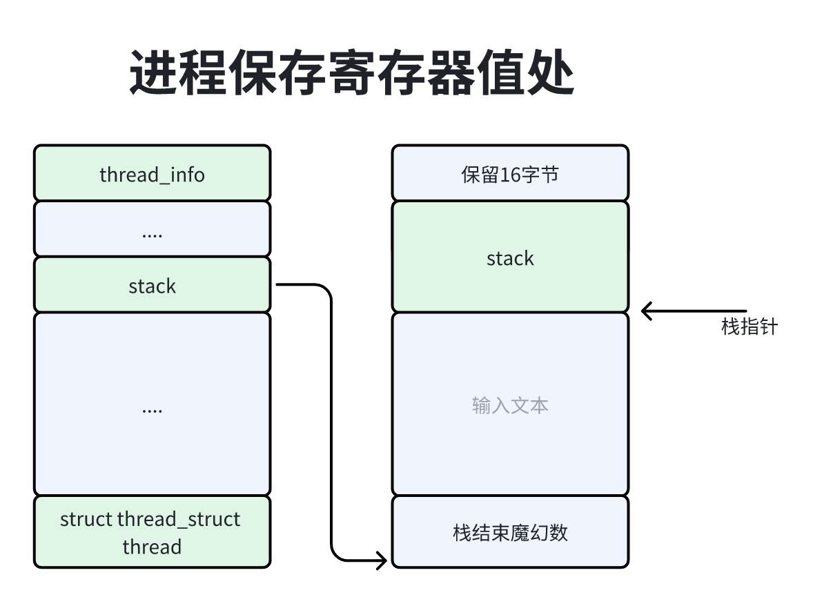
ARM64结构的函数copy_thread_tls中主要把工作委托给了copy_thread函数，代码如下：
791// 位置：arch/arm64/kernel/process.c2
3int copy_thread(unsigned long clone_flags, unsigned long stack_start,4 unsigned long stk_sz, struct task_struct *p)5{6 struct pt_regs *childregs = task_pt_regs(p);7 8 // 把新进程的进程描述符成员thread.cpu_context清零，在调度进程时切换出去的进程使用9 // 这个成员保存通用寄存器的值10 memset(&p->thread.cpu_context, 0, sizeof(struct cpu_context));11
12 // 用户进程13 if (likely(!(p->flags & PF_KTHREAD))) {14 // 子进程把当前进程内核栈底部的pt_regs结构体复制一份，当前进程从用户模式切换到内核模式15 // 把用户模式的各种寄存器保存一份放在内核栈底部的pt_regs结构体中16 *childregs = *current_pt_regs();17 18 // 把紫禁城的X0寄存器设置为0，因为X0寄存器存放系统调用返回值，调用fork或clone子进程返回019 childregs->regs[0] = 0;20
21 /*22 * 从寄存器tpidr_el0读取当前线程的线程本地存储的地址，23 * 因为它可能和保存的值不一致24 *25 * 把子进程的TRIDR_El0寄存器设置为当前进程的TRIDR_EL0寄存器的值，26 * TRID_EL0是用户读写线程标识符寄存器（User Read and Write Thread ID Register），27 * pthread库用来存放每线程数据的基准地址，存放每线程的区域通常被称为本地存储（Thread Local Storage TLS）28 */29 *task_user_tls(p) = read_sysreg(tpidr_el0);30 31 // 如果系统调用clone创建线程时指定了用户栈的起始地址，那么把新线程的栈指针寄存器32 // SP_EL0设置为用户栈的起始地址33 if (stack_start) {34 if (is_compat_thread(task_thread_info(p)))35 childregs->compat_sp = stack_start;36 else37 childregs->sp = stack_start;38 }39
40 /*41 * 如果把线程本地存储的地址传给系统调用clone第4个参数42 * 那么新线程将使用它43 * 44 * 如果使用系统调用clone创建线程时设置了标志位CLONE_SETTLS，那么把新线程的TPIDR_EL045 * 寄存器设置为系统调用clone第4个参数tls指定的本地存储的地址46 */47 if (clone_flags & CLONE_SETTLS)48 p->thread.tp_value = childregs->regs[3];49 50 } else {51 52 // 内核线程53 54 // 把子进程内核栈底部的pt_regs结构体清零55 memset(childregs, 0, sizeof(struct pt_regs));56 // 把子进程的处理器状态设置为PSR_MODE_EL1h，值为5，其中第0位是栈指针选择符57 // (ARM64架构在异常级别1时可以使用异常级别1的栈指针寄存器SP_EL1，也可以使用异常级别0的栈指针SP_EL0)58 // 值为1表示选择栈指针寄存器SP_EL1；第2、3位是异常级别，值为1表示异常级别为159 childregs->pstate = PSR_MODE_EL1h;60 if (IS_ENABLED(CONFIG_ARM64_UAO) &&61 cpus_have_const_cap(ARM64_HAS_UAO))62 childregs->pstate |= PSR_UAO_BIT;63 // 把子进程的x19寄存器设置为线程函数的地址，注意参数stack_start存放线程函数的地址，64 // 即用来创建内核线程的函数kernel_thread的第一个参数fn。65 p->thread.cpu_context.x19 = stack_start;66 // 把子进程的x20寄存器设置为传给线程函数的参数，注意参数stk_sz存放传给线程函数的参数，67 // 即用来创建内核函数kernel_thread的第二个参数arg。68 p->thread.cpu_context.x20 = stk_sz;69 }70 71 // 把子进程的程序及时设置为函数ref_form_fork，当子进程被调度时，从函数ret_from_fork开始执行72 p->thread.cpu_context.pc = (unsigned long)ret_from_fork;73 // 把子进程的栈指针寄存器SP_EL1设置为内核栈底部pt_regs结构体的起始位置74 p->thread.cpu_context.sp = (unsigned long)childregs;75
76 ptrace_hw_copy_thread(p);77
78 return 0;79}
设置进程号和进程关系：函数copy_process的最后部分为新进程设置进程号和进程关系，代码如下：
1881// 位置：kernel/fork.c2
3static __latent_entropy struct task_struct *copy_process(4 unsigned long clone_flags,5 unsigned long stack_start,6 unsigned long stack_size,7 int __user *child_tidptr,8 struct pid *pid,9 int trace,10 unsigned long tls,11 int node)12{13....14 15 /**16 * 为新进程分配进程号，从新进程号所属的进程号命名空间一直到根，每层进程号都会命名空间为17 * 新进程分配一个进程号。18 *19 * pid等于init_struct_pid的地址，代表在内核初始化时，引导处理器为每个从处理器分叉生成20 * 一个空闲线程（参考idle_threads_init）所有处理器空闲线程使用进程0，21 * 全局变量init_struct_pid存放空闲线程进程号。22 */23 if (pid != &init_struct_pid) {24 pid = alloc_pid(p->nsproxy->pid_ns_for_children);25 if (IS_ERR(pid)) {26 retval = PTR_ERR(pid);27 goto bad_fork_cleanup_thread;28 }29 }30 31....32
33 /* ok, now we should be set up.. */34 p->pid = pid_nr(pid);35 36 /**37 * 分情况设置新进程退出时发送给父进程的信号，设置新进程的线程组38 */39 // 如果创建线程，就会把新线程的成员exit_signal设置为-1，新线程退出时，40 // 不需要发送信号给父进程，因为新线程和当前线程属于同一个线程组，所以成员group_leader指向同一个组长。41 // 成员tgid存放组长的进程号42 if (clone_flags & CLONE_THREAD) {43 p->exit_signal = -1;44 p->group_leader = current->group_leader;45 p->tgid = current->tgid;46 47 // 创建进程执行过程48 } else {49 // 如果传入标志CLONE_PARENT，新进程和当前进程时兄弟关系，那么新进程的成员exit_signal50 // 等于当前进程所属线程组的组长的成员exit_signal51 if (clone_flags & CLONE_PARENT)52 p->exit_signal = current->group_leader->exit_signal;53 54 // 如果没有传标志，新进程和当前进程时父子关系，那么新进程的成员exit_signal是调用者指定的信号。55 else56 p->exit_signal = (clone_flags & CSIGNAL);57 p->group_leader = p;58 p->tgid = p->pid;59 }60 61....62
63 cgroup_threadgroup_change_begin(current);64 /*65 * 控制组的进程数控制检查器检查是否允许创建新进程，从当前进程所属的控制组一直到控制组层级的根，66 * 如果一个控制组的进程数大于等于限制，那么不允许使用fork和clone创建新进程。67 *68 * 控制组（cgroup）的进程数（PIDs）控制器：用来限制控制组机器子控制组中的进程使用fork和clone69 * 创建的新进程的数量，如果进程p所属的控制组到控制组层级的根，其中有一个控制组的进程数量大于70 * 等于限制，就不允许进程p使用fork或clone函数创建新进程。71 */72 retval = cgroup_can_fork(p);73 if (retval)74 goto bad_fork_free_pid;75
76 /*77 * Make it visible to the rest of the system, but dont wake it up yet.78 * Need tasklist lock for parent etc handling!79 */80 write_lock_irq(&tasklist_lock);81 82 /**83 * 为新进程设置父进程84 */85 if (clone_flags & (CLONE_PARENT|CLONE_THREAD)) {86 // 如果传入了CLONE_PARENT或者CLONE_THREAD标志，新进程和当前进程就会有相同的父进程87 p->real_parent = current->real_parent;88 p->parent_exec_id = current->parent_exec_id;89 90 // 否则，新进程的父进程就是当前进程91 } else {92 p->real_parent = current;93 p->parent_exec_id = current->self_exec_id;94 }95
96 klp_copy_process(p);97
98 spin_lock(¤t->sighand->siglock);99 100....101
102 if (likely(p->pid)) {103 ptrace_init_task(p, (clone_flags & CLONE_PTRACE) || trace);104 105 // 把新进程的成员pids[PIDTYPE_PID].pid指向第2行代码分配的进程号结构体106 init_task_pid(p, PIDTYPE_PID, pid);107 108 /**109 * 如果创建新进程，指向下边处理逻辑110 */111 if (thread_group_leader(p)) {112 // 因为新进程和当前进程属于同一个进程组，所以成员pids[PIDTYPE_PGID].pid指向同一个进程组的组长的进程号结构体113 init_task_pid(p, PIDTYPE_PGID, task_pgrp(current));114 // 因为新进程和当前进程属于同一个会话，所以成员pids[PIDTYPE_SID].pid指向同一个会话的控制组进程号结构体115 init_task_pid(p, PIDTYPE_SID, task_session(current));116
117 // 如果新进程时1号进程，那么新进程时进程号命名空间中的孤儿进程领养者，忽略致命的信号118 // 因为1号进程时不能被杀死的119 if (is_child_reaper(pid)) {120 ns_of_pid(pid)->child_reaper = p;121 p->signal->flags |= SIGNAL_UNKILLABLE;122 }123 124 p->signal->leader_pid = pid;125 p->signal->tty = tty_kref_get(current->signal->tty);126 /*127 * Inherit has_child_subreaper flag under the same128 * tasklist_lock with adding child to the process tree129 * for propagate_has_child_subreaper optimization.130 */131 p->signal->has_child_subreaper = p->real_parent->signal->has_child_subreaper ||132 p->real_parent->signal->is_child_subreaper;133 134 // 把进程添加到父进程的子进程的链表中135 list_add_tail(&p->sibling, &p->real_parent->children);136 // 把新进程添加到进程链表中，链表节点是成员tasks，头节点是空闲线程成员tasks(init_task.tasks)137 list_add_tail_rcu(&p->tasks, &init_task.tasks);138 // 把新进程添加到进程组的进程链表中139 attach_pid(p, PIDTYPE_PGID);140 // 把新进程添加到会话的进程链表中141 attach_pid(p, PIDTYPE_SID);142 __this_cpu_inc(process_counts);143 144 145 // 如果创建线程，执行下面的处理146 } else {147 // 把线程组的线程计数+1148 current->signal->nr_threads++;149 // 把线程组的第2个线程计数+1这个计数值是原子变量150 atomic_inc(¤t->signal->live);151 // 把信号结构体的引用计数+1152 atomic_inc(¤t->signal->sigcnt);153 // 把线程加入到线程组的线程链表中，链表节点是成员thread_group，头节点是组长成员thread_group154 list_add_tail_rcu(&p->thread_group,155 &p->group_leader->thread_group);156 // 把线程加入线程组的第2中，链表节点是成员thread_node，头节点是信号结构体的成员thread_head157 list_add_tail_rcu(&p->thread_node,158 &p->signal->thread_head);159 }160 // 把新进程添加到进程号结构体的进程链表中161 attach_pid(p, PIDTYPE_PID);162 // 把线程计数+1163 nr_threads++;164 }165
166 total_forks++;167 spin_unlock(¤t->sighand->siglock);168 169
170 syscall_tracepoint_update(p);171 write_unlock_irq(&tasklist_lock);172
173 // 调用函数proc_fork_connector，通过进程事件连接器向用户空间通告进程事件PROC_EVENT_FORK174 // 进程可以通过进程事件连接器箭筒进程事件：创建协议号为NETLINK_CONNECTOR的netlink套接字，175 // 然后绑定多播组CN_IDX_PROC.176 proc_fork_connector(p);177 cgroup_post_fork(p);178 cgroup_threadgroup_change_end(current);179 180 perf_event_fork(p);181
182 trace_task_newtask(p, clone_flags);183 uprobe_copy_process(p, clone_flags);184
185 return p;186 187 ....188}函数wake_up_new_task负责唤醒刚刚创建的新进程，代码：
421// 位置：kernel/sched/core.c2
3void wake_up_new_task(struct task_struct *p)4{5 struct rq_flags rf;6 struct rq *rq;7
8 raw_spin_lock_irqsave(&p->pi_lock, rf.flags);9 // 把新进程的状态从TASK_NEW切换到TASK_RUNNING10 p->state = TASK_RUNNING;11 // 在SMP系统上，创建新进程是执行负载均衡的绝佳时机，为新进程选择一个负载最轻的处理器 13 __set_task_cpu(p, select_task_rq(p, task_cpu(p), SD_BALANCE_FOet_task_cpu(p, select_task_rq(p, task_cpu(p), SD_BALANCE_FOTASK_RUNNINGRK, 0));14 // 锁住运行队列16 rq = __task_rq_lock(p, &rf);17 // 耿勋运行队列的时钟18 update_rq_clock(rq);19 // 根据公平运行队列的平均负载均衡统计值，推算新进程的平均负载均衡的统计值20 post_init_entity_util_avg(&p->se);21
22 // 把新进程插入运行队列23 activate_task(rq, p, ENQUEUE_NOCLOCK);24 p->on_rq = TASK_ON_RQ_QUEUED;25 trace_sched_wakeup_new(p);26 // 检查新进程是否可以抢占当前进程27 check_preempt_curr(rq, p, WF_FORK);28 if (p->sched_class->task_woken) {30 /*31 * Nothing relies on rq->lock after this, so its fine to32 * drop it.33 */34 rq_unpin_lock(rq, &rf);35 // 在SMP系统上，调用调度类的task_woken方法36 p->sched_class->task_woken(rq, p);37 rq_repin_lock(rq, &rf);38 }39 // 释放运行队列的锁41 task_rq_unlock(rq, p, &rf);42}新进程第一次运行，是从函数ref_from_fork开始执行，函数ret_from_fork是由各种处理器架构自定义的函数，ARM64架构定义的ref_from_fork代码如下：
在函数copy_thread中，如果新进程是内核线程，寄存器x19存放线程函数的地址，寄存器x20存放新城函数的参数，如果新进程时用户进程，寄存器x19的值是0。
211// 位置：arch/arm64/kernel/entry.S2
3tsk .req x28 // 当前进程的thread_info的结构体地址4ENTRY(ret_from_fork) 5 // 调用schedule_tail函数，为上一个进程执行清除操作6 bl schedule_tail7 cbz x19, 1f // 如果寄存器x19的值是0，说明当前进程是用户进程，那么跳转到标号18 9 /**10 * 如果寄存器x19的值不是0，说明当前进程是内核线程，那么调用线程函数11 */12 mov x0, x20 // 内核线程：x19存放线程函数的地址，x20存放线程函数的参数13 blr x19 // 调用线程函数14 15 /**16 * 如果寄存器x19的值是0，说明当前进程是用户进程，那么使用寄存器x28存放当前进程17 * 的thread_info结构体地址，然后跳转到标号ret_to_user返回用户模式18 */19 1: get_thread_info tsk // 用户进程：x28=sp_el0 = 当前进程的thread_info结构体地址20 b ret_to_user // 返回用户模式21ENDPROC(ret_from_fork)函数schedule_tail主要为上一个进程执行清理操作，是新进程第一次运行必须最先做的事情，代码：
191// 位置：kernel/sched/core.c2
3asmlinkage __visible void schedule_tail(struct task_struct *prev)4 __release(rq->lock)5{6 struct rq *rq;7 8 // 调用finsl_task_switch函数，为上一个进程执行清理操作9 rq = finsh_task_switch(prev);10 // 执行运行队列的所有负载均衡回调函数11 balance_callback(rq);12 // 开启内核抢占13 preempt_enable();14 15 // 如果pthread库在调用clone函数创建线程时，设置了标志位CLONE_CHILD_SETTID16 // 那么新进程把自己的进程标识符写到指定的位置17 if(current->set_child_tid)18 put_user(task_pid_vnr(current), current->set_child_tid);19}当调度器调度新进程时，新进程从函数set_from_fork开始执行，然后从系统调用fork返回用户空间，返回值是0，接着新进程使用系统调用execve装载程序。
Linux配合提供了2个装载程序的系统调用：
21int execve(const char *filename, char *const argv[], char *const envp[]);2int execveat(int dirfd, const chat *pathname, char *const argv[], char *const envp, int flags);这2个系统调用主要区别是：如果路径名是相对的，那么execve解释为相对调用进程的当前工作目录，而execveat解释相对文件描述符dirfd指向的目录。如果路径名是绝对的，那么execveat忽略参数dirfd。
execve参数说明：
->argv：是传给新程序的参数指针数组，数组的每个元素存放在一个参数字符的地址，argv[0]应该是指向要装载的程序名称。
->envp：是传给新程序的环境指针数组，数组的每个元素存放一个环境字符串的地址，环境字符串的形式是键=值。
->注意：argv和envp都必须在数组的末尾包含一个空指针。
如果程序的main函数被定义为下面的形式，参数指针数组和环境指针数组可以被程序的main函数访问：
11int main(int agc, char *argv[], char *envp[]);可是，POSIX.1标准没有规定main函数的第3个参数，根据POSIX.1标准，应该借助外部变量environ访问环境指针数组。
这两个系统调用最终都调用函数do_execveat_common，执行流程图如图所示：
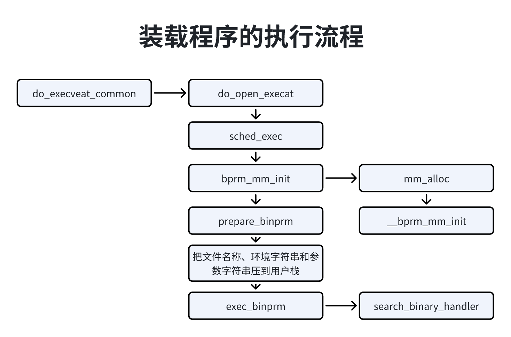
执行流程：
调用函数do_open_execat打开执行文件；
调用sched_exec，装载程序是一次很好的实现处理器负载均衡的机会，因为此时进程在内存和缓存中的数据是最少的，选择负载最轻的处理器，然后唤醒当前处理器上的迁移线程，当前进程睡眠等待迁移线程把自己迁移到目标处理器；
调用bprm_mm_init，创建新的内存描述符，分配临时的用户栈；
如下图所示，临时用户栈的长度是一页，虚拟地址范围时[STACK_TOP_MAX - 页长度, STACK_TOP_MAX)，bprm>p指向在栈底保留一个字长（指针长度）后的位置；
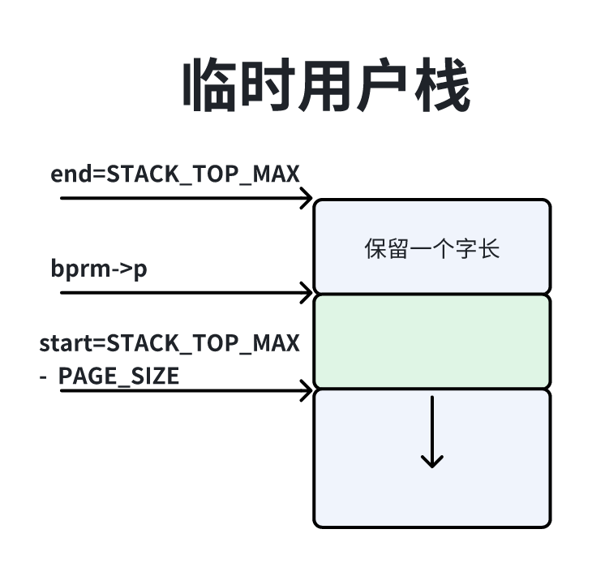
调用函数prepare_binprm设置进程证书，然后读文件的前面128字节到缓冲区；
依次把文件名称、环境字符串和参数字符串压到用户栈，如下图所示：
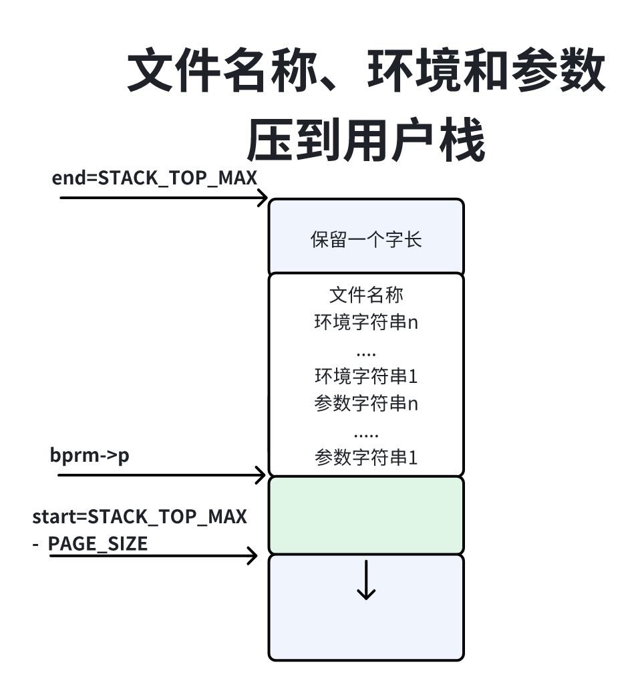
调用exec_binprm，此函数会调用search_binary_handler，尝试注册过的每种二进制格式的处理程序，直到某个处理程序识别正在装载的程序位置；
在Linux内核中，每种二进制格式都表示为下面的数据结构的一个实例：
111// 位置：include/linux/binfmts.h2
3struct linux_binfmt{4 struct list_head lh;5 struct module *module;6 int (*load_binary)(struct linux_binprm *);7 int (*load_shlib)(struct file *);8 int (*core_dump)(struct coredump_params *cprm);9 10 unsigned long min_coredump;/* 核心存储文件的最小长度 */11}每种二进制格式必须提供以下3个函数：
1. load_binary用来加载普通程序；
2. load_shlib用来加载共享库；
3. core_dump用来在进程异常退出时生成核心转储文件，程序员使用调试器（如GDB）分析核心转储文件找出原因，min_coredump指定核心转储文件的最小长度；
每种二进制 格式必须使用函数register_binfmt向内核注册。
ELF文件：ELF，Executable and Linkable Format是可执行与可链接格式，主要有4种类型：
目标文件（object file），也叫可重定位文件（relocatable file），扩展名是.o，是由多个目标文件可以链接生成可执行文件或者共享库；
可执行文件（executable file）；
共享库（shared object file），扩展名是.so；
核心转储文件（core dump file）；
ELF文件组成部分：如下图所示，分为4个部分，ELF首部、程序首部标（program header table）、节（section）、节首部表（section header table），一个文件不一定包含全部内容，而且他们的位置中只有ELF首部的位置是固定的，其他的也不是固定的。
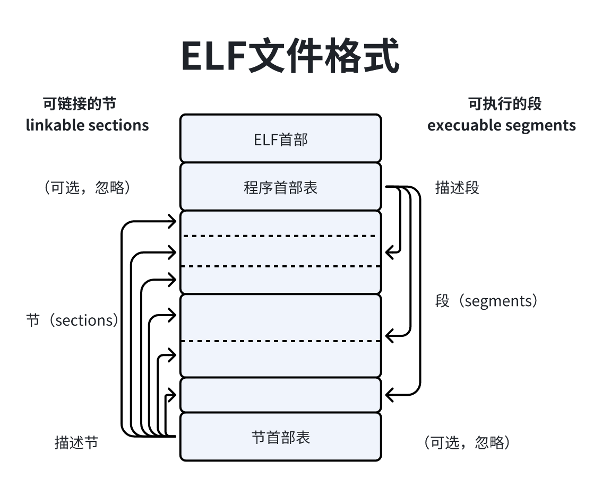
程序的首部标就是我们所说的段标（segment table）；段（segment）是从运行的角度描述，节（section）是从链接的角度描述，一个段包含一个或多个节，在不会混淆的情况下，我们通常把节称为段，例如代码段（text section）。
ELF首部成员说明：
| ELF首部的成员 | 说明 |
|---|---|
| unsigned char e_ident[EI_NIDENT] | 16字节魔幻数 前4字节是ELF文件的标识符，第1字节似乎0x7F（删除的ASCII编码）第2~4字节是ELF 第5字节表示ELF文件类别：1表示32位ELF文件、2表示64位 第6字节表示字节序 第7字节表示版本 第8字节表示应用二进制接口（ABI）的类型 其他字节暂时不需要，用0填充 |
| Elf64_Halfe_type | ELF文件类型：1表示可重定位文件（目标文件）、2表示可执行文件、3表示动态库、4表示核心转储文件 |
| Elf64_Half2_machine | 机器类别，例如EM_ARM(40)表示ARM32位、EM_AARCH64(183)表示ARM64位 |
| Elf64_Word e_version | 版本，用来区分不同的ELF变体，目前的规范只定义了版本1 |
| Elf64_Addr e_entry | 程序入口的虚拟地址 |
| Elf64_Off e_phoff | 程序首部的文件偏移 |
| Elf64_Word e_flags | 处理器特定的标志 |
| Elf64_Half e_ehsize | ELF首部的长度 |
| Elf64_Half e_phentsize | 程序首部表中表项的长度，单位是字节 |
| Elf64_Half e_phnum | 程序首部表中表项的数量 |
| Elf64_Half e_shentsize; | 节首部表中表项的长度，单位是字节 |
| Elf64_Half e_shnum | 节首部表中表项的数量 |
| Elf64_Half e_shstrndx | 节名称字符串表在节首部表中的索引 |
程序首部表中每条表项的成员及说明：
| 程序首部表中每条表项的成员 | 说明 |
|---|---|
| Elf64_Word p_type | 段的类型，常见的段类型如下。 (1)可加载段(PT_LOAD，类型值为1)— 表示一个 需要从二进制文件映射到虚拟地址空间的段，例如程 序的代码和数据 (2)解释器段(PT_INTERP，类型值为3)— 指定把可 执行文件映射到虚拟地址空间以后必须调用的解释器，解 释器负责链接动态库和解析没有解析的符号。解释器通常 是动态链接器，即ld共享库，负责把程序依赖的动态库映 射到虚拟地址空间 |
| Elf64_Word p_flags | 段的标志，常用的3个权限标志是读、写和执行 |
| Elf64_Off p_offset | 段在文件中的偏移 |
| Elf64_Addr p_vaddr | 段的虚拟地址 |
| Elf64_Addr p_paddr | 段的物理地址 |
| Elf64_Xword p_filesz | 段在文件中的长度 |
| Elf64_Xword p_memsz | 段在内存中的长度 |
| Elf64_Xword p_align | 段的对齐值 |
| Elf64_Word sh_name | 节名称在节名称字符串表中的偏移 |
| Elf64_Word sh_type | 节的类型 |
| Elf64_Xword sh_flags | 节的属性 |
| Elf64_Addr sh_addr | 节在执行时的虚拟地址 |
| Elf64_Off sh_offset | 节的文件偏移 |
| Elf64_Xword sh_size | 节的长度 |
| Elf64_Word sh_link | 引用另一个节首部表表项，指定该表项的索引 |
| Elf64_Word sh_info | 附加的节信息 |
| Elf64_Xword sh_addralign | 节的对齐值 |
| Elf64_Xword sh_entsize | 如果节包含一个表项长度固定的表，例如符号表，那么这个成员存放 表项的长度 |
重要节及说明：
| 节名称 | 说明 |
|---|---|
| .text | 代码节(也称文本节)，通常称为代码段，包含程序的机器指令 |
| .data | 数据节，通常称为数据段，包含已经初始化的数据，程序在运行期间 可以修改 |
| .rodata | 只读数据 |
| .bss | 没有初始化的数据，在程序开始运行前用零填充(bss的全称是“Block Started by Symbol”，表示以符号开始的块) |
| .interp | 保存解释器的名称，通常是动态链接器，即ld共享库 |
| .shstrtab | 节名称字符串表 |
| .symtab | 符号表。符号包括函数和全局变量，符号名称存放在字符串表中，符 号表存储符号名称在字符串表里面的偏移。可以执行命令“readelf --symbols <ELF文件的名称>”查看符号表 |
| .strtab | 字符串表，存放符号表需要的所有字符串 |
| .init | 程序初始化时执行的机器指令 |
| .fini | 程序结束时执行的机器指令 |
| .dynamic | 存放动态链接信息，包含程序依赖的所有动态库，这是动态链接器需要 的信息。可以执行命令“readelf --dynamic <ELF文件的名称>”来查看 |
| .dynsym | 存放动态符号表，包含需要动态链接的所有符号，即程序所引用的动 态库里面的函数和全局变量，这是动态链接器需要的信息。可以执行 命令“readelf --dyn-syms <ELF文件的名称>”查看动态符号表 |
| .dynstr | 这个节存放一个字符串表，包含动态链接需要的所有字符串，即动态 库的名称、函数名称和全局变量的名称。“.dynamic”节不直接存储动 态库的名称，而是存储库名称在该字符串表里面的偏移。动态符号表 不直接存储符号名称，而是存储符号名称在该字符串表里面的偏移 |
可以使用程序readelf查看ELF文件的信息：
1. 查看ELF首部：readelf-h<ELF文件的名称>；
2. 查看程序首部表：readelf-l<ELF文件的名称>；
3. 查看节首部表：readelf-S<ELF文件的名称>；
代码实现：内核中负责解析ELF程序的源文件信息：
| 源文件 | 说明 |
|---|---|
| fs/binfmy_elf.c | 解析64位ELF程序，和处理器架构无关 |
| fs/compat_binfmt_elf.c | 在64位内核中解析32位ELF程序，和处理器架构无关，注意：该源文件首先对一些数据类型和函数重命名，然后包含源文件binfmt_elf.c |
函数load_elf_binary：主要负责装载ELF程序，执行流程如下：
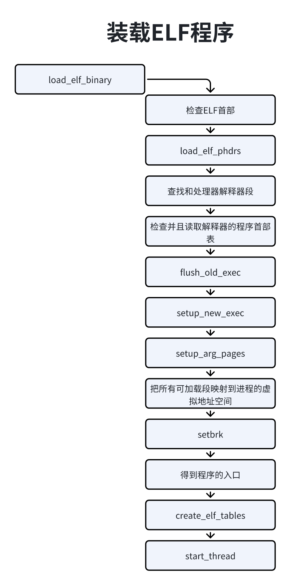
检查ELF首部：检查迁4字节是不是ELF魔幻数，检查是不是可执行文件或者共享库，检查处理器架构；
读取程序首部表；
在程序首部表中查找解释路段，如果程序需要链接动态库，那么存在解释器段，从解释器段读取解释器的文件名称，打开文件，读取ELF首部；
检查解释器的ELF首部，读取解释器的程序首部表；
调用函数flush_old_exec终止线程组中的所有其他线程，释放旧的用户虚拟地址空间，关闭那些设置了“执行execve时关闭”标志文件；
调用函数setup_new_exec：此函数调用arch_pick_mmap_layout来设置内存映射的布局，在堆和栈之间有一个内存映射区域，传统的方式是内存映射区域向栈的方向扩展，另一种方案是内存映射区域向堆的方向扩展，从2种方案中选择一种，然后把进程的名称设置为目标程序的名称，设置用户虚拟地址空间的大小；
以前调用函数bprm_mm_init创建了临时的用户栈，现在调用函数set_arg_pages把用户栈定下来，更新用户栈的标志位和访问权限，把用户栈移动到最终的位置，并且扩大用户栈；
把所有可加载的段映射到进程的虚拟地址空间；
调用函数setbrk把未初始化数据段映射到进程的用户虚拟地址空间，并且设置堆的起始虚拟地址，然后调用函数padzero用零填充未初始化数据段；
得到程序的入口：如果程序有解释器段，那么把解释器程序中的所有可加载段映射到进程的用户虚拟地址空间，程序入口是解释器程序的入口，否则就是目标程序自身的入口；
调用函数creaete_elf_tables：依次把传递ELF解释器信息的辅助信息向量、环境指针数组ecvp、参数指针数组argv和参数个数argc压到进程的用户栈；
调用函数start_thread：设置结构体pt_pages中的程序计数器和指针寄存器，当进化成能从用户模式切换到内核模式时，内核把用户模式的各种寄存器保存在内核栈底部的结构体pt_regs中，因为不同处理器架构的寄存器不同，所以各种处理器架构必须自定义结构体pt_regs和函数start_thread，ARM64架构定义的函数start_thread如下：
161// 位置：arch/arm64/include/asm/processor.h2
3
4static inline start_thread(struct pt_regs *regs, unsigned long pc)5{6 mmset(regs, 0, sizeof(*regs));7 regs->syscallno = ~OUL;8 regs->pc = pc; /*把程序计数器设置为程序的入口*/9}10
11static inline void start_thread(struct pt_regs *regs, unsigned long pc, unsigned long sp)12{13 start_thread_common(regs, pc);14 regs->pstate = PSR_MODE_EL0t; /*把处理器状态设置为0，其中异常级别是0*/15 regs->sp = sp; /*设置用户指针*/16}脚本程序的主要特征是，前两字节是"#!"，后面是解释程序的名称和参数，解释程序用来解释执行脚本程序。
如图所示，源文件fs/binfmt_scrupt.c定义的函数load_script负责装载脚本程序：
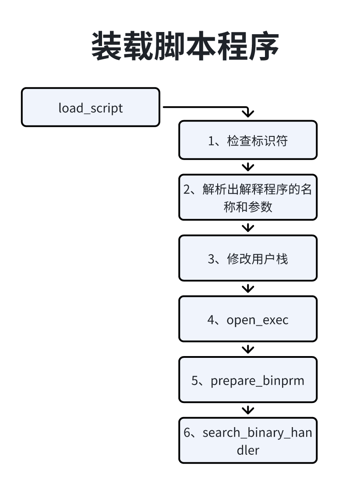
检查标识符：检查前两字节是不是脚本程序的标识符；
解释出解释程序的名称和参数；
修改用户栈：从用户栈第一个参数，然后依次把本程序的文件名称传给解释程序的参数和解释程序的名称压到用户栈；
open_exec：打开解释程序文件；
prepare_binprm：设置进程证书，然后读取解释程序文件的前128字节到缓冲区；
search_binary_handler：尝试注册过每种二进制格式的处理程序，直到某个处理程序识别解释程序位置；